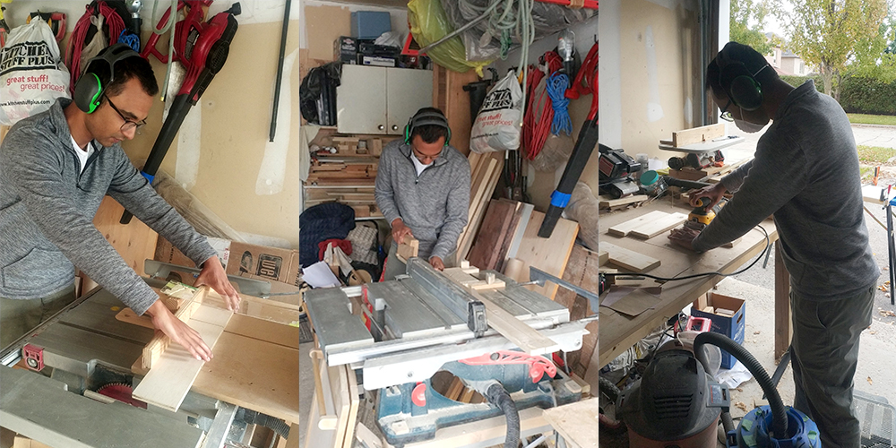

October 2021
My very own riser table in action. It features legs that swing down on their own, so I can conveniently prop it up or collapse it within seconds.
As our living spaces started to become a recluse for WFH, it became easy to sit through extended periods without stretching or moving around. Like many, I felt increasing tightness in my hip flexors and hamstrings over the past year. Doing floor stretches and using a foam roller helped but soon after returning to my desk, the tightness crept back.
To make my workspace more comfortable, I looked into buying a riser or standing desk, but most were too big or unreasonably priced for their offering. Moreover, I’ve always wanted to try woodworking, so I seized this situation to build a riser that can easily be propped up or collapsed atop my existing desk. This project was made possible through the guidance (and tools 😅) of my friend, Justin, who’s a pro at woodworking after getting into it a few years back.
I designed a mockup of the riser using SketchUp.
I started off by designing the riser using SketchUp, a free and convenient 3D modelling tool. After Justin's approval, I began browsing for materials on Home Depot. After comparing plywood, medium density fibreboard, and particle board, I decided on a ½ inch plywood as it is relatively strong, lightweight, and has some resemblance to real wood. I also bought 1x3x8 framing lumber for the legs, and four hinges to swing them. The total came up to about $40.
Photos of the ½ inch plywood, framing lumber, and 2 inch zinc hinges. Framing lumber often have warps and other imperfections, so it's a good idea to buy it in-store.
On the day, Justin briefed me on power tool safety to avoid kickback and keep my fingers intact. He also suggested adding aprons to the sides of the riser for integrity and visual appeal. I learned to use a table saw to cut the plywood and framing lumber, a mitre saw to make angled cuts for the base of the legs, and a table router to carve out Rabbet joints on the aprons. At the end, I used a sander to smoothen out edges and applied 3 coats of polyurethane. The whole project was completed within a day! 🙌
Performing cross and rip cuts using the table saw, and sanding down the leg blocks.
I’ve been using my riser on the regular, and it’s greatly improved my focus and eased muscle tension. With it also comes the satisfaction knowing it’s something I built from scratch using skills I was unfamiliar with up until then. I can appreciate why many prefer to invest their time and money on tools that allow them to fix and build things to improve the space around them. I value practical skills and this woodworking project was an inspiring start.